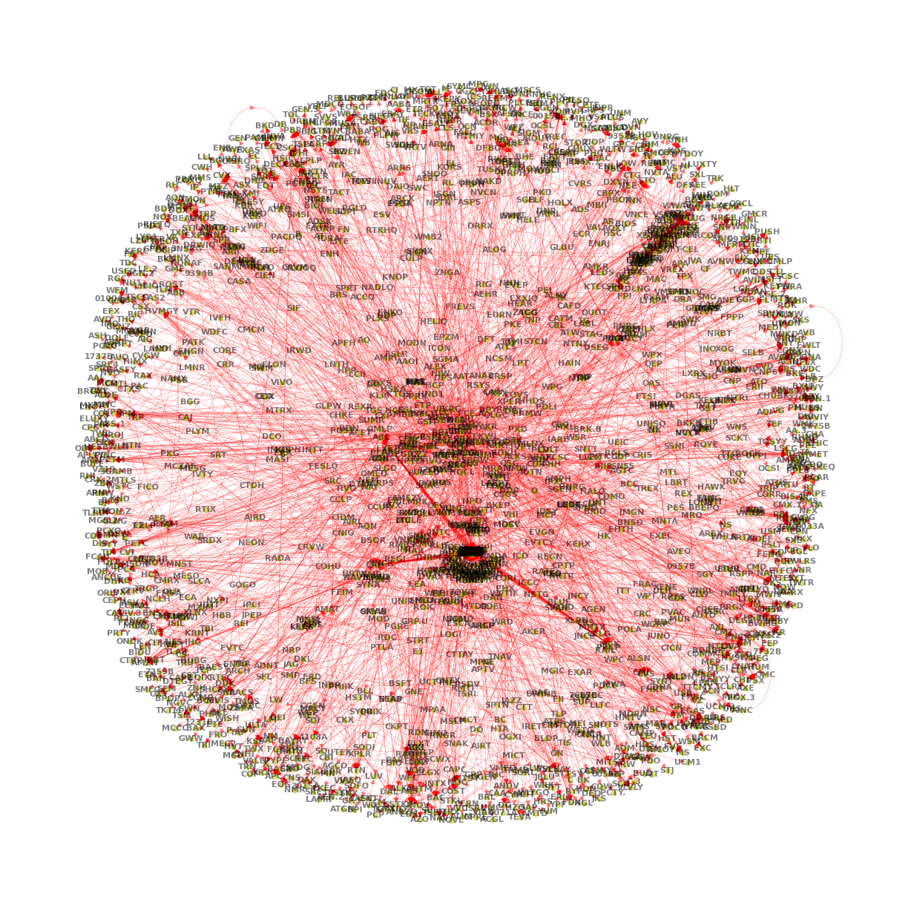

Principal Customers Network#
UNDER CONSTRUCTION
Graphs: ego network, induced subgraph
Supply chain: principal customers
import numpy as np
import pandas as pd
import networkx as nx
from pandas import DataFrame, Series
import matplotlib.pyplot as plt
from pandas.api import types
import numpy.ma as ma
from numpy.ma import masked_invalid as valid
from finds.database import SQL
from finds.graph import graph_info, graph_draw, nodes_centrality
from finds.misc import Show
from secret import paths, credentials
# %matplotlib qt
VERBOSE = 0
show = Show(ndigits=4, latex=None)
sql = SQL(**credentials['sql'], verbose=VERBOSE)
imgdir = paths['images'] / 'supplychain'
# Retrieve principal customers info
year = 2016
cust = sql.read_dataframe(f"select gvkey, cgvkey, stic, ctic, conm, cconm "
f" from customer "
f" where srcdate >= {year}0101 "
f" and srcdate <= {year}1231")
# To lookup company full name from ticker
lookup = pd.concat([Series(cust['conm'].values, cust['stic'].values),
Series(cust['cconm'].values, cust['ctic'].values)])\
.drop_duplicates()
# Construct Directed Graph
vertices = set(cust['stic']).union(cust['ctic'])
edges = cust[['stic', 'ctic']].values.tolist() # supplier --> customer
G = nx.DiGraph()
G.add_nodes_from(vertices)
G.add_edges_from(edges)
Show graph properties
graph_info(G)
{'triad_003': 1014214260,
'triad_012': 5493913,
'triad_102': 1826,
'triad_021D': 7858,
'triad_021U': 21706,
'triad_021C': 1036,
'triad_111D': 0,
'triad_111U': 2,
'triad_030T': 59,
'triad_030C': 0,
'triad_201': 0,
'triad_120D': 0,
'triad_120U': 0,
'triad_120C': 0,
'triad_210': 0,
'triad_300': 0,
'transitivity': 0.0037252178305341582,
'average_clustering': 0.004935791976903955,
'weakly_connected': False,
'weakly_connected_components': 89,
'size_largest_weak_component': 1628,
'strongly_connected': False,
'strongly_connected_components': 1829,
'size_largest_strong_component': 2,
'directed': True,
'weighted': False,
'edges': 3052,
'nodes': 1830,
'selfloops': 11,
'density': 0.0009118422978903937}
Display graph
pos = graph_draw(G,
figsize=(12, 12),
savefig=imgdir / 'graph.jpg',
font_color='k',
node_color='y')
plt.show()

# 3. Node properties
G.remove_edges_from(nx.selfloop_edges(G)) # remove self-loops, if any
Nodes Centrality#
show top nodes’ centrality properties
centrality = DataFrame.from_dict(nodes_centrality(G))
n = 5
for c in centrality.columns:
df = centrality[[c]].sort_values(by=c, ascending=False)[:n]
print(pd.concat((lookup[df.index].rename('name'), df), axis=1))
name clustering
ODC OIL DRI CORP AMERICA 0.5
FORM FORMFACTOR INC 0.5
FVE FIVE STAR SENIOR LIVING INC 0.5
MKC MCCORMICK & CO INC 0.5
PTR PETROCHINA CO LTD 0.5
name in_degree
WMT WALMART INC 0.062329
MCK MCKESSON CORP 0.022963
RDS.A ROYAL DUTCH SHELL PLC 0.022963
CAH CARDINAL HEALTH INC 0.022417
ABC AMERISOURCEBERGEN CORP 0.019683
name out_degree
AKAM AKAMAI TECHNOLOGIES INC 0.015856
DHX DHI GROUP INC 0.013669
KRG KITE REALTY GROUP TRUST 0.011482
NPO ENPRO INDUSTRIES INC 0.011482
CBL CBL & ASSOCIATES PPTYS INC 0.010935
name eigenvector
ZIOP ZIOPHARM ONCOLOGY INC 0.500000
XON INTREXON CORP 0.500000
FCSC FIBROCELL SCIENCE INC 0.500000
OGEN ORAGENICS INC 0.500000
AET AETNA INC 0.000835
name pagerank
WMT WALMART INC 0.025525
AET AETNA INC 0.020512
CVS CVS HEALTH CORP 0.019657
MCK MCKESSON CORP 0.011308
CAH CARDINAL HEALTH INC 0.010130
name hub
KRG KITE REALTY GROUP TRUST 0.019795
BRX1 BRIXMOR OPERATING PRTNRS LP 0.018452
BRX BRIXMOR PROPERTY GROUP INC 0.018452
DDR DDR CORP 0.014801
RPT RAMCO-GERSHENSON PROPERTIES 0.014442
name authority
WMT WALMART INC 0.117030
BBY BEST BUY CO INC 0.035143
DKS DICKS SPORTING GOODS INC 0.033133
BBBY BED BATH & BEYOND INC 0.031484
PETM PETSMART INC 0.029829
name betweenness
ABC AMERISOURCEBERGEN CORP 0.000101
CAH CARDINAL HEALTH INC 0.000068
CVS CVS HEALTH CORP 0.000047
ESRX EXPRESS SCRIPTS HOLDING CO 0.000038
MCK MCKESSON CORP 0.000037
name closeness
WMT WALMART INC 0.063601
MCK MCKESSON CORP 0.040170
CAH CARDINAL HEALTH INC 0.036602
CVS CVS HEALTH CORP 0.036326
ABC AMERISOURCEBERGEN CORP 0.035619
Longest path#
Ego graph#
induce ego-graph of max betweenness node and neighbors
c = 'betweenness'
center = centrality.index[np.argmax(centrality[c])]
all_neighbors = list(nx.all_neighbors(G, center)) # predecessors and successors
neighbors = list(nx.neighbors(G, center)) # successors only
ego = G.subgraph([center] + all_neighbors).copy()
graph_info(ego, fast=True)
{'weakly_connected': True,
'weakly_connected_components': 1,
'size_largest_weak_component': 39,
'strongly_connected': False,
'strongly_connected_components': 39,
'size_largest_strong_component': 1,
'directed': True,
'weighted': False,
'edges': 41,
'nodes': 39,
'selfloops': 0,
'density': 0.02766531713900135}
node_color = (dict.fromkeys(all_neighbors, 'b')
| dict.fromkeys(neighbors, 'g')
| {center: 'cyan'})
labels = ({ticker: ticker for ticker in ego.nodes}
| {ticker: lookup[ticker] for ticker in [center] + neighbors})
graph_draw(ego,
figsize=(10, 5),
savefig=imgdir / f"{center},png",
node_size=300,
width=1,
node_color=node_color,
labels=labels,
style='-',
title=f"Ego network for node with largest {c}: {center}")
{'SHPG': array([-0.25082933, -0.35567791]),
'WBA': array([-1. , -0.03256569]),
'BMY': array([ 0.00178938, -0.52295215]),
'LLY': array([0.43506672, 0.24086706]),
'ACUR': array([0.17293448, 0.57909669]),
'MRK': array([0.60701898, 0.30035638]),
'VVUS': array([ 0.49540816, -0.40330805]),
'PTX': array([-0.04990963, 0.67154546]),
'IPXL': array([ 0.3459714 , -0.50353382]),
'ENDP': array([ 0.08266948, -0.37185982]),
'PFE': array([-0.14875308, -0.00745675]),
'TLGT': array([ 0.69966816, -0.02100429]),
'AMGN': array([-0.40817628, 0.61391159]),
'ABBV': array([ 0.26554787, -0.32381893]),
'BIIB': array([-0.60259212, 0.40572203]),
'AMPH': array([-0.06136585, -0.24890341]),
'AGN': array([-0.66651497, 0.13778222]),
'ESRX': array([0.76898448, 0.56049694]),
'PDLI': array([-0.39867019, -0.12518804]),
'RHHBY': array([ 0.17165874, -0.51965105]),
'SPPI': array([ 0.54197759, -0.11407883]),
'KERX': array([0.60375536, 0.4485514 ]),
'ANIP': array([-0.2840836 , 0.50338873]),
'LCI': array([-0.49590841, 0.22394769]),
'PCRX': array([-0.29596525, -0.54054871]),
'ACET': array([-0.13594692, -0.55326711]),
'SGEN': array([ 0.21083251, -0.02688948]),
'MNK': array([-0.44720782, -0.41432912]),
'AMAG': array([-0.53428029, -0.08141577]),
'MYL': array([0.46438575, 0.02716273]),
'ICCC': array([-0.22462841, 0.26772037]),
'ABC': array([-0.05812201, 0.21695896]),
'GILD': array([ 0.36950431, -0.19184001]),
'INSY': array([ 0.61316937, -0.23343322]),
'MACK': array([-0.4987529, 0.1428751]),
'AKRX': array([-0.70008699, -0.06749587]),
'VRX': array([-0.6135401 , -0.23826206]),
'VLRX': array([0.68409957, 0.1428459 ]),
'ALKS': array([0.34089183, 0.41425084])}